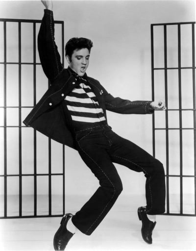

Elvis Aaron Presley est un chanteur et acteur américain né le 8 Janvier 1935 à Tupelo, dans le Mississippi, et mort le 16 août 1977, à Memphis dans le Tennessee. Surnommé The King (« le Roi »), il est l'une des icônes culturelles majeures du XXe siècle.
COMMENCER LE QUIZ!